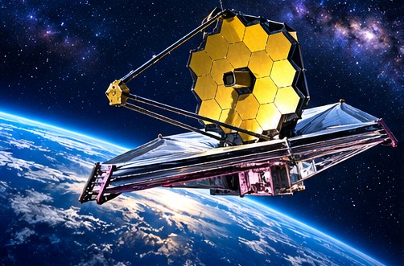

TEXAS NEWS STUDIO / NEWS
SPACE · NOVEMBER 7, 2026
SPACE TELESCOPE MISSION ENDS

TNS EDITORIAL NOTE: This is an original news brief and analysis of publicly discussed developments, not a claim of firsthand reporting. The image is a conceptual illustration, not documentary photography.
Reports say a long-serving NASA space telescope has returned to Earth, ending a decades-long mission.
First verify the mission
Space headlines can blur together: a telescope can end scientific operations, lose communications, reenter the atmosphere, or simply finish a planned phase. Those are different events. The precise spacecraft, mission status, and timeline should be confirmed through NASA's official mission updates before a definitive claim is made.
Why older missions matter
Long-running spacecraft can produce valuable science well beyond their original planned lifetimes. Engineers learn how hardware ages, and astronomers gain observations across many years. The end of a mission is often also the beginning of years of research using its archived data.
What comes next
Look for NASA's final mission statement, scientific highlights, and any confirmed reentry or disposal details. A dramatic ending is not required for a mission to have been extraordinary.
Tex's Take | TNS Commentary
My view: the most useful thing a news outlet can do is separate what is known from what is merely being predicted. Big headlines are easy. Following the documents, the numbers, and the consequences for ordinary people takes more work. And if every prediction of disaster came true, we'd all need a second calendar just to schedule the emergencies. We'll keep watching the facts, and we'll update the story when the evidence changes.